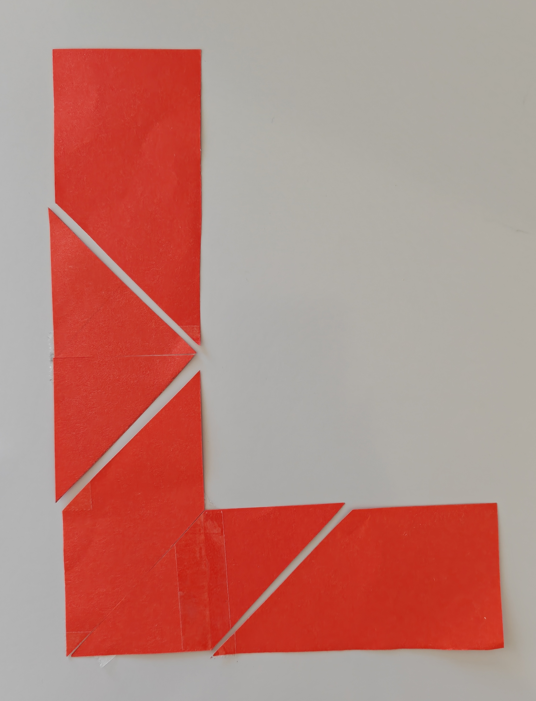
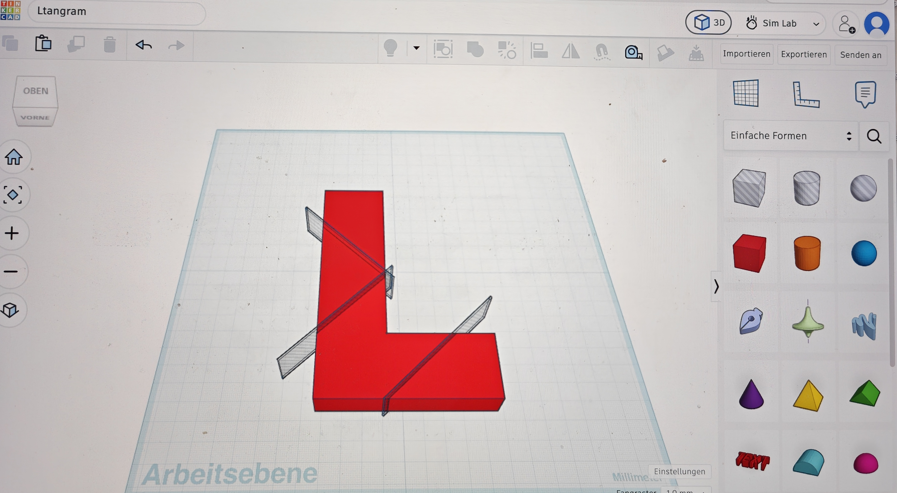

Modul: Lasercutter (xTool S1)
1. Schneiden (Cut) Der Laserstrahl schneidet mit hoher Leistung voll durch das Material (z.B. Sperrholz, Acryl).
2. Gravieren (Raster Engrave) Der Laser rastert über eine Fläche hin und her und brennt Flächen, Grafiken oder dicke Buchstaben flächig ein.
3. Ritzen (Score / Vektorgravur) Der Laser fährt eine Vektorlinie schnell und mit schwacher Leistung ab. Die Linie wird feinsäuberlich eingeritzt, ohne durchzuschneiden.

